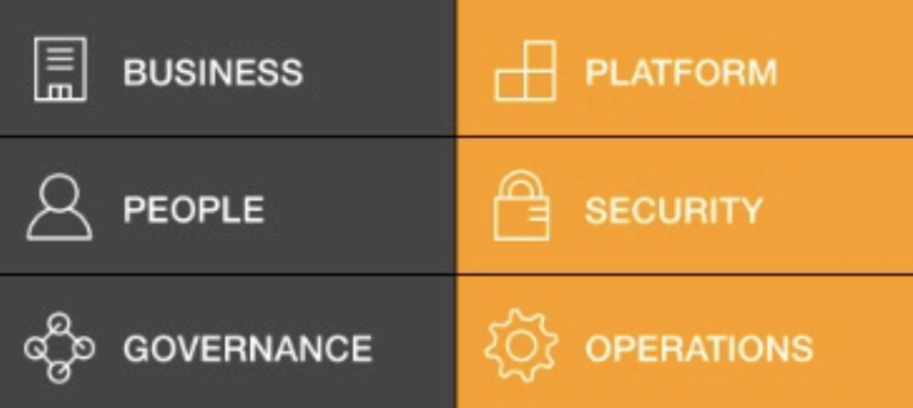
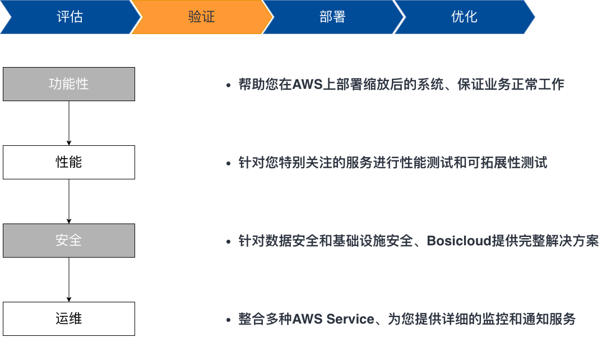
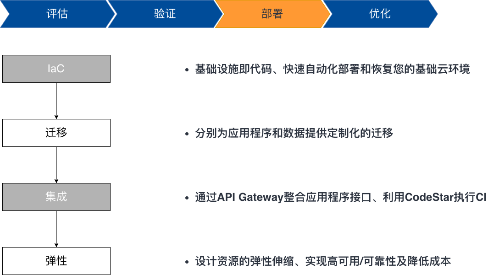
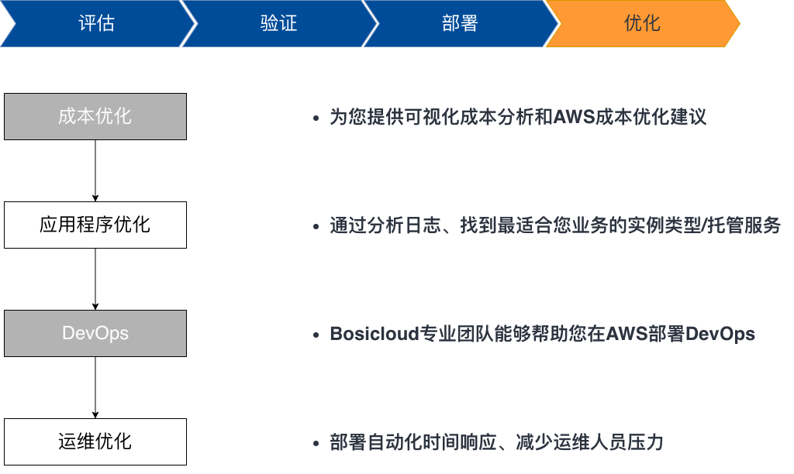

安全、快速地将您的系统迁移至亚马逊云科技
企业选择公有云以节约成本、敏捷迭代
Bosicloud专注于帮助客户设计、构建、优化、运营其IT环境,减少企业运维成本、加速创新

Migration阶段：评估

相关服务&工具

- Cloud Adoption Framework
- 云采用框架 （简称CAF）是一套帮助您加速上云节奏的框架。它提供了相关指导和最佳实践案例、帮助您衡量迁移优先级等重要事项。采用CAF能够使您更快地以较低风险接触云计算,获得业务收益。
Migration阶段：验证

相关服务&工具
- Amazon EC2
- Amazon Elastic Compute Cloud (简称EC2) 是一种 Web 服务，可以在云中提供安全并且可调整大小的计算容量。该服务旨在让开发人员能够更轻松地进行 Web 规模的云计算。
- Amazon Virtual Private Cloud
- 借助 Amazon Virtual Private Cloud (简称VPC)，您可以在 亚马逊云科技 云中预置一个逻辑隔离的部分，从而在自己定义的虚拟网络中启动 亚马逊云科技 资源。您可以完全掌控您的虚拟联网环境，包括选择自己的 IP 地址范围、创建子网以及配置路由表和网络网关。
- Amazon Identity and Access Management
- Identity and Access Management (简称IAM) 使您能够安全地管理对亚马逊云科技服务和资源的访问。您可以使用 IAM 创建和管理 亚马逊云科技 用户和组，并使用各种权限来允许或拒绝他们对 亚马逊云科技 资源的访问。
Migration阶段：部署

相关服务&工具
- Amazon CloudFormation
- 为您提供了一种通用语言来描述和预配置您的云环境中的所有基础设施资源。CloudFormation 使您可以跨所有地区和账户使用简单的文本文件以自动化的安全方式为您的应用程序需要的所有资源建模并对其进行预配置。该文件是您的云环境的单一信任源。

- Amazon Auto Scaling
- Amazon Auto Scaling 可以监控您的应用程序并自动调整容量，从而以尽可能低的成本来保持稳定、可预测的性能。使用 Amazon Auto Scaling，您可以在几分钟内为多项服务中的多个资源轻松设置应用程序扩展。

- Amazon CloudWatch
- Amazon CloudWatch 是一种面向开发人员、系统操作员、网站可靠性工程师 (SRE) 和 IT 经理的监控和管理服务。为您提供相关数据和切实见解，以监控应用程序、了解和响应系统范围的性能变化、优化资源利用率，并在统一视图中查看运营状况。
Migration阶段：优化

相关服务&工具

- Amazon Cost Explorer
- Amazon Cost Explorer 具有易于使用的界面，可供您随时间可视化、了解和管理您的 亚马逊云科技 成本和使用率。
- Amazon CodePipeline
- 它是一种完全托管的CICD服务，可以帮助您实现发布管道的自动化，从而实现快速而可靠的应用程序和基础设施更新。代码一旦发生更改，都会根据您定义的发布模型自动构建、测试和部署您的发布流程。这使您能够快速而可靠地提供各种功能和更新。